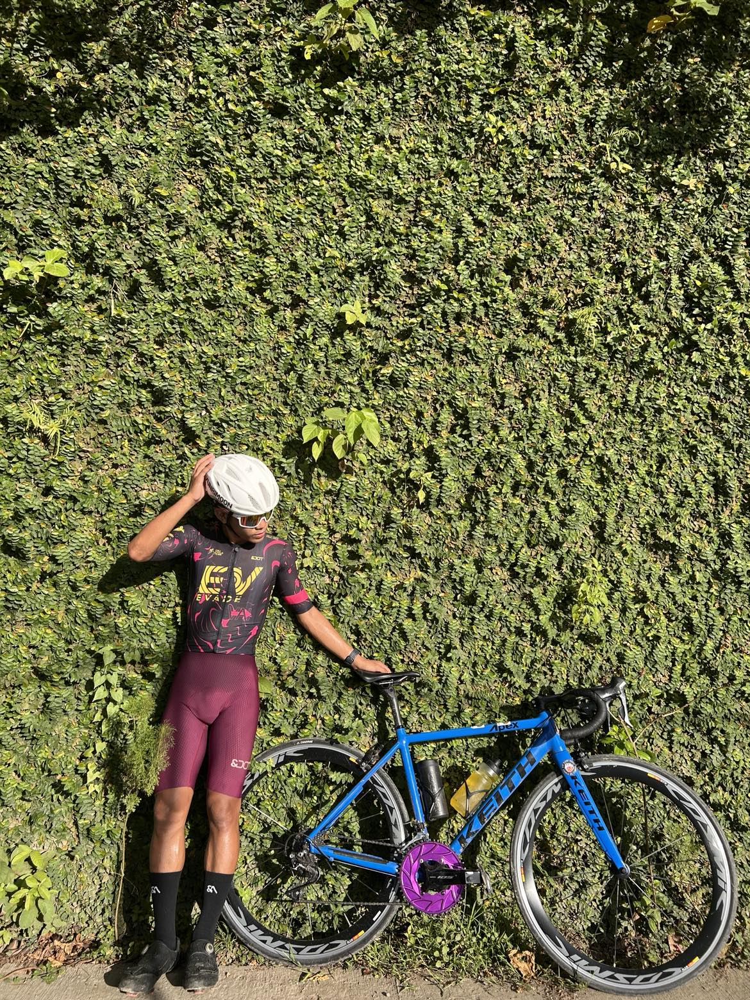

Course: BSIT
Year: 1st Year
School: Cordova Public College
Hobbies: Cycling, Editing, Dancing
18. Cycling enthusiast. Passionate about learning and driven to succeed. Just trying to make the most of every day!

One of my favorite hobbies is cycling. It helps me stay active, reduces stress, and allows me to explore new places. Aside from physical benefits, cycling also improves focus and mental clarity which helps me in my studies.
Learn more about cycling here: Cycling Tips